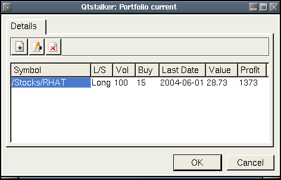

Portfolios
Description:
This dialog allows you to edit a portfolio. A portfolio is just a group of charts with the most recent value relative to the purchase price.
This is the dialog you see when you edit a portfolio item. The 4 settings are:
- Symbol - The symbol or ticker of the position.
- Action - Long or short position.
- Price - The purchase price.
- Volume - The volume of the position.